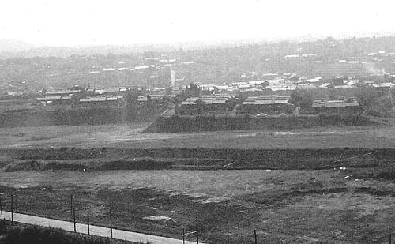
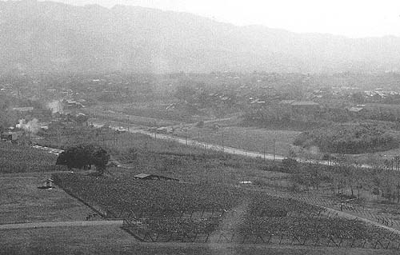
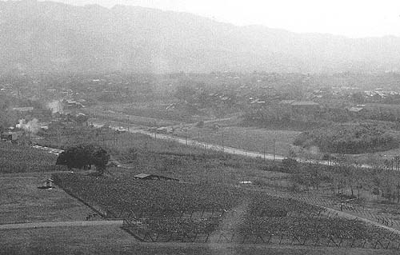

三井鉱山緑ヶ丘社宅菫町（1974年撮影） 写真左に緑ヶ丘小学校グラウンドが見える。道路沿いに炭鉱電車が走っていた。  三井鉱山緑ヶ丘社宅菫町（1974年撮影）  写真右、荒尾市立緑ヶ丘小学校（1974年撮影） これら写真3枚は、1974（昭和49）年三井グリーンランドの観覧車から写した。当時のグリーンランド はまさしく緑の丘で、あまり遊園具は無く、ぶどう畑やなし畑が広がっていた。
写真左に緑ヶ丘小学校グラウンドが見える。道路沿いに炭鉱電車が走っていた。
三井鉱山緑ヶ丘社宅菫町（1974年撮影）  写真右、荒尾市立緑ヶ丘小学校（1974年撮影） これら写真3枚は、1974（昭和49）年三井グリーンランドの観覧車から写した。当時のグリーンランド はまさしく緑の丘で、あまり遊園具は無く、ぶどう畑やなし畑が広がっていた。
写真右、荒尾市立緑ヶ丘小学校（1974年撮影） これら写真3枚は、1974（昭和49）年三井グリーンランドの観覧車から写した。当時のグリーンランド はまさしく緑の丘で、あまり遊園具は無く、ぶどう畑やなし畑が広がっていた。
これら写真3枚は、1974（昭和49）年三井グリーンランドの観覧車から写した。当時のグリーンランド はまさしく緑の丘で、あまり遊園具は無く、ぶどう畑やなし畑が広がっていた。